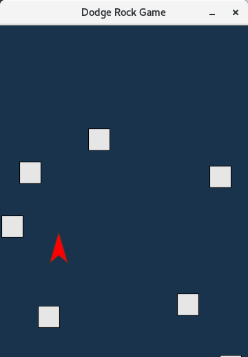

あそびかた

- 十字キーやWASDキーで移動
- 飛んでくる岩をとにかく避けろ！
- 飽きたらPCのゴミ箱にダンク！
シンプルなゲームなので、説明不要かとも思いますが、基本これだけです。

クリアといった概念は特にありません。
ひたすら避けて、ひたすら耐えて、ゴミ箱にダンクするまでがゲームです。

申し訳程度のスコア要素付き。
| キー配置 | 効果 |
|---|---|
| 十字キーなど | 上下左右移動 |
| Shiftキー | 低速移動 |
| Rキー | ゲームオーバー画面からリスタート |
| Tキー | ゲームオーバー画面からタイトル画面へ |
| Qキー | ゲームオーバー画面でゲーム終了 |
いちおうゲームパッド対応してるので、アナログスティックなりR1なりでも動かせるはずです。
リスタートなどはキーボード使ってね♡
ゲームを自分でビルドしたい方へ
そんな人いるかわからないけど、一応書いときます。
Rust言語の環境を整えてから、当ゲームのリポジトリからソースファイルを落としてビルドしてください。
git clone https://github.com/dettalant/dodge_rock.git
cd dodge_rock
cargo run --releaseビルドにはSDL2と、その他もろもろのパッケージが必要なので、なかったら適時入れてね。
おまけ情報
開発者ですら細かいと思ってる部分のご紹介
デバッグモード
-d、--debug引数をつけて起動するとデバッグモードに入ります。
自機当たり判定が表示されたり、コンソール側に敵速度と敵数が表示されたりします。
「デバッグ用に使ったの残してるだけでしょ」とは言わないで。
言語切り替え機能
いっちょ前に言語切り替え機能を入れてたりします。
game_config.tomlのis_translateの値をtrueに変更すると、英語表示になりますよい。
下のスクリーンショットは急遽撮影したものなので、デスクトップ環境が違うのは許してね。
隠しキー操作
十字キー、WASDキーの他に、実はHJKLキーでの操作にも対応してます。
これはいわゆるVimエディタのキーバインディング。
いわゆるイースターエッグ的なアレです、はい。
敵速度の加速上限
ないです。いろいろ適当なこのゲームに、そんな高尚なバランス調整とかありません。
敵速度加速は青天井、敵増加も青天井、ついでに完全ランダム配置。君はどこまで行ける！？
……製作者の僕は4000点もいったことなかったりします。